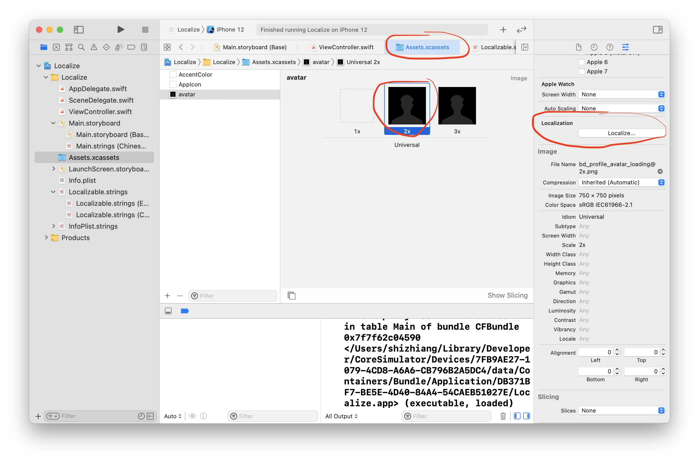

推荐！iOS应用使用Assets.xcassets进行图片国际化的2种方法
iOS应用的国际化除了文字以外还需要对一些本地使用的资源进行国际化，这篇文章将分享一些关于Image图片国际化的方案。
主要包括iOS应用图片国际化有两种方法：
- Assets.xcassets中同一个ImageSet包含不同的本地化图片
- 使用名称不同的ImageSet
到公众号【iOS开发栈】学习更多SwiftUI、iOS开发相关内容。
同一个ImageSet包含不同的本地化图片

按照正常流程把一张png图片添加到Assets.xcassets中以后，选中其中任意一张图片然后就可以在Inspector的第四栏Attribute Inspector中看到Localization选项，点击后会出现项目中已经国际化的语言。（添加语言的方法可以查看完整了解国际化步骤）
在Localization中选中的语言就是要单独设置图片的语言，如果单独设置的语言图片是空的就会自动选择用第一个（Universal）的图片。
我的这个项目里有简体中文和英文两种语言，并且对avatar这个图片的中文设置了单独图片。当我在设置中切换简体中文和英文时图片就会被切换了。
使用名称不同的ImageSet
在Assets.xcassets中分别创建两个ImageSet，然后在ImageNamed中使用NSLocalizedString来设置图片名字。
1 | avatarImageView.image = UIImage(named: NSLocalizedString("avatarImageName", comment: "This is the avatar image's name")) |
NSLocalizedString()宏中的第一个参数是多语言的key，而comment是用来生成多语言注释的，更深入的了解可以查看标记需要本地化的文本
1 | // Localization.strings(English) |
分别在中文简体和英文的Localization.strings的多语言文件中添加对应的图片文件名。
之后分别在不同的语言环境下运行项目就可以看到不同的图片了。
到公众号【iOS开发栈】学习更多SwiftUI、iOS开发相关内容。
总结
通过上面的2种方法可以将图片进行本地化处理，其中第二种方法也可以用于UIImage(contentsOfFile:)方法。
相关文章